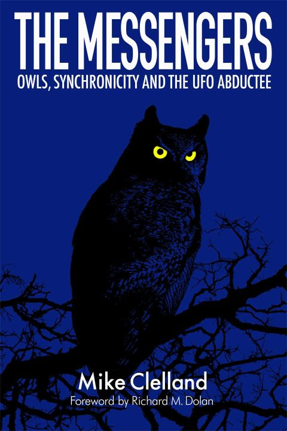

フクロウと UFO の間の謎の関係を合理的に説明する仮説
 (image source: http://hiddenexperience.blogspot.com/)
履歴
(2023-06-16) 追加して完結。
(2023-06-08) 作成。 ❑ フクロウと UFO の間の謎の関係を合理的に説明する仮説 （途中1） (2023-06-08)
(2023-06-08 begin)
前置き
…を思いついたので記録しておく。
予備知識
フクロウと UFO の間に不可解だが密接な関係があることについては下の過去記事で取り上げた。
Mike Clelland : 森で二人がフクロウの飛来を目撃。直後に巨大な三角形型 UFO が出現。 (2020-11-29)
Mike Clelland : フクロウとシンクロニシティ、アブダクション (2014-09-18)
仮説
フクロウと UFO（より一般的には、フクロウと 超常/怪奇 現象）の間に不可解だが密接な関係があることは、この 10-20年間の間に Mike Clelland らの努力で徐々に知れ渡ってきた。
そして、なぜそのような不可解な関係があるのかについて、これまでは主に Carl Jung の集合的無意識や元型といった仮説に基づいた神話的イメージの反映などが示唆されてきた。
だが、そういった Jung 的な反証不能な仮説ではなく、反証可能で合理的な仮説を以下で述べる。
…
…
(2023-06-08 end)
(2023-06-16 begin)
前置き
たぶん、以下の仮説はまだ誰も思いついていない筈。
データを揃え、ヒントを与えて誘導すれば AI （ChatGPT-4 ＋ Web browsing 機能）でも同様の仮説が導出できるかどうかを、あれこれ試したが、さすがにそれは無理だった。とはいえ、ChatGPT-4 は後述の論文 (*1) を瞬時に探してきた。独力でこの論文を探し出せるという自信は私にはない。この意味で ChatGPT-4 は恐ろしく有能。
この仮説が解明対象とする謎
以下、上から下に進むに連れ、謎はより一般的・普遍的になっている。
(1) 「森で二人がフクロウの飛来を目撃。直後に巨大な三角形型 UFO が出現」という現象が、生じたのはなぜか？
(2) この (1) の逸話のみならず、UFO 現象と フクロウの間に不可解だが密接な関係があることが、多数の証言によって明らかになっている。なぜそのような証言が生まれたのか？
(3) フクロウがいつになく身の回りに出現し、直後に不吉な出来事や怪奇現象が生じる事例が少なからず報告されている。なぜこのような現象が生じるのか？
(4) なぜ、古代からフクロウが 超常/怪奇 現象と関連付けられてきたのか？
仮説の要旨
最初に、事実を述べる。
(a) フクロウが獲物とする野ネズミは、周囲に電磁界が存在する場合、行動パターンが変化し、より攻撃的となったり、恒常的な探索活動を行うことが実験から明らかとなった(*1)。
この a から次の三段階からなる仮説 A が導き出せる。
step 1 : 強い EMF 異常が発生すると orb や大気中の発光現象が生じ、それが UFO と誤認される(*4)。
step 2 : EMF 異常によって、その付近の野ネズミの行動パターンが変化し大胆化するので、フクロウがその野ネズミを狩るのが容易になる。
step 3 : よって、フクロウ生息地で UFO が目撃される状況下（EMF 異常の発生中）では、フクロウも野ネズミを狩る活動が活発になる。
つまり、(1) の フクロウが出現した直後に UFO が出現した理由はこの 仮説 A で説明できる。
次に、事実に基づいた憶測に移る。
(b) 一部の鳥類には弱い磁気（地磁気の類）を感知する能力があることが判明している(*2)。フクロウを対象にした研究事例は見つからなかったが、フクロウも弱い磁気を含め、電磁界の感知能力がある可能性がある。その可能性が事実であれば、フクロウは EMF 異常を感知した場合、野ネズミの活動の大胆化を本能的に予測して、直ぐに狩猟行動を活発化させることになる。
この b が (2) の、いつもはさして目につかないのに、UFO の出現と前後してフクロウが人間の目につく範囲に頻繁に現れる理由となる。
次に、実験的根拠が薄い仮説に移る。
(c) 一般的に、「不吉な出来事や怪奇現象」の大半は EMF 異常による一時的な意識障害が引き起こした幻覚体験である。
この c によって、(3)が合理的に説明づけられる。
以上を要約すれば次のようになる。
・EMF 異常によって UFO の目撃が起きる。
・さらに EMF 異常によってフクロウの探索活動が活発化する。
・そして EMF 異常によって「不吉な出来事や怪奇現象」を感知(*3)する人々が増える。
以上の機序は現代のみならず、古代から機能していた。したがって (4) の「古代からフクロウが 超常/怪奇 現象と関連付け」がなされてきた。
(*2)
以下の記事が根拠。
Unravelling the enigma of bird magnetoreception : https://www.nature.com/articles/d41586-021-01596-6
Magnetoreception - Wikipedia https://en.wikipedia.org/wiki/Magnetoreception
(*3)
ここで問題となるのは、次のような事例もたびたび報告されている事。
「いつもは近寄らず目にもつかないフクロウが、すぐ近くの窓にやってきて、なかなか立ち去らない。奇妙だと思っていたら、近親者の死去の知らせの電話が入った」
このような事例が単なる偶然ではなく、事実だったと以下では仮定する。その場合、上の仮説だけでは説明が難しい。
次の仮説を追加することで、そのような事例も説明が可能となるが、因果関係が循環するので、以下の仮説の導入は避けたいのが本音。
仮説 D：近親者の死去を ESP 的に意識下で察知した。ESP が機能する場合、周囲に EMF 異常を引き起こすことがある。その EMF 異常を感知してフクロウがその人物に接近した。
Chis Bledsoe が orb を頻繁に周辺に発生させているのもこの仮説 D で説明ができる。街路灯の電球の破裂を予知した女性の証言もこれで説明できる。Greer の CE-5 で orb が出現するのも説明できる。abductee の身辺の電気機器が故障したり、店の警報機が鳴り出す現象も説明ができる。
だが、やはり私は仮説 D は受け入れたくない。何かもっと別の合理的な説明がある筈。
(*4)
orb や発光現象が「上部ドーム、窓、パイプ、排気口などを備えた明らかに金属加工された精密な航空用機械」として視認されるのも EMF 異常による意識障害の結果。UFO の窓に ET の姿を目撃するのも同様。複数人が同じ UFO を見るのは「事後の記憶結晶化」もしくは「共鳴的認知」による（というのが私の別の仮説）。これについては過去記事で詳しく述べてきた。(*1)
実験結果の重要箇所が下。
実験結果をまとめた論文の原文と DeepL 訳が下。（論文が Web から消える可能性があるゆえ、図を除いてまるごと引用しておく。著作権者からの要求があれば引用を削除する用意があります。コメント欄からお気軽にお問い合わせください）マウスが自分の生息地に対して組織的なシステムを持ち始めたことがわかる。3週目以降、マウスは自分の重要な領域で恒常的な探索活動を行い、既知および新規の要素や物体を常に環境の中で探索し、ガラスケージにある食べ物や液体を嗅いだり、かじったり、味見したりする。我々は、マウスの組織と探索活動が関連すると考えているが、定期的にケージを清掃する際に、尿便の排泄が見られること、電源や水から離れた同じ場所に頻繁に配置されていることを強調することが重要である。 電磁界曝露によるマウスの行動の様相：図6の2番目のグラフ（右）では、マウスのストレスレベルの行動が、最低（静穏）から、中程度を経て、水のように攻撃的なレベルまで、徐々に増加していることがわかる。電磁場や放射線の影響は、これらの物理的な薬剤にさらされたマウスの行動に直接大きな影響を与えることがわかります。1分間に蓄積される平均エネルギーは350mJを超えないにもかかわらず、それは分子のイオン化のために起こる分子共鳴に比べれば、非常に低いエネルギーであることと同じです。しかし、電磁波が物質と相互作用し、これらの生体に浸透する物理原理を考慮すると、波の重ね合わせの原理により、ある時間エネルギーが蓄積されることが確認されます。このため、ケージや実験環境には目に見えないエネルギーの集中領域が存在し、マウスが感知できる温度レベルを上昇させるため、マウスの生息環境と生理機能の変化が顕著に進行する。異なる発生源から発せられる電磁波の影響は、マウスの生存に必要な自然な反応を引き起こす
電磁波がマウスの行動に与える影響について
作：ロベルト・カルロス・ベラ、イスラエル・ムニョス
30分～38分
オープンアクセス査読付き章
投稿日：2020年2月27日 査読日：2020年7月5日 2020年7月5日発行 2020年9月2日発行
DOI: 10.5772/intechopen.93320
編集された巻から
齧歯類（げっしるい
ロート・S・ムルング 編著
要旨
現在、生命の発達に伴い、動物、特にマウスはその進化の過程で様々な行動をとるようになった。そのため、マウスが電磁場などの物理的な要因にさらされた場合、その生息環境と食餌の中で異なる行動が見られる。そこで、標高3950mに位置するボリビア・ポトシ市において、異なる周波数の電磁場にさらされたマウスの行動観察に基づく分析を行った。適用された方法論は、説明的・縦断的研究である。その結果、電磁波がマウスの行動に及ぼす影響により、高いストレス指数が発生し、マウスの社会的行動の変化に影響を及ぼすことが結論づけられた。
キーワード
電磁界
マウス
マウスストレス
携帯電話
マウス多動
ロベルト・カルロス・ヴェラ
ボリビア、UTEPSA大学
イスラエル・ムニョス
メキシコ、国立工科大学
*Address all correspondence to: robertrormc@gmail.com
1. はじめに
20世紀末、人類は大きな科学的進歩を遂げましたが、その主なものの1つが電気通信の発展でした。この技術によってグローバル化が進み、一般的な生活やビジネスが向上したため、現在では特に重要な技術となっています。通信技術は年々進化し、それに伴ってさまざまなアプリケーションが生まれ、地球上のあらゆる地域で急速に普及しています。この通信現象とともに、環境に一定の影響を与える電磁波も、電磁波照射の威力により増加しました。これは、マックス・プランク（1858-1947）が提唱した「電磁波スペクトルは、波長と周波数によって、伝播するエネルギーの一定量を量子というパッケージの形で集中させる」というものである。
E=hνE1
ここで、hはプランク定数（6.626×10-34J×s-1）、νは波の周波数（Hz）である。
このプランク定数を考慮すると、電磁場の照射エネルギーの伝播は、物質との相互作用の影響があり、また、地球上の生物は生化学的、生物電気学的であると考えられ、以前と比較して汚染が進んでいることが明らかな環境の異なる条件に適応しています。このため、電磁波の伝搬解析は、発生源までの距離や照射時間によって、より多くの電磁波エネルギーを集中させることができる物質との相互作用の光学的特性に基づいて行う必要がある。
その結果、電磁力は電場と磁場から構成されることを考慮することが重要であり、これらは物質の固有特性であり、静的および/または動的に提示することができ、これらの変数の放出は "電磁放射" として知られています。移動する電荷は、異なる強度の電流を生成し、媒体中の電磁波の伝搬を生じさせる。図1は、電磁波スペクトルの概略的な分布を示しています。
図1.
電磁波スペクトルの模式図（出典：http://emc2-igcse-help.blogspot.com/2017/02/311-identify-order-of-electromagnetic.html）。
ボックス1 ボックス2
マウスID 初期質量(g) 適応時間終了時の最終質量(g) マウスID 初期質量(g) 適応時間終了時の最終質量(g)
1 11.54 19.45 1 10.45 20.71
2 13.45 20.45 2 9.25 -
3 11.23 23.81 3 10.33 24.56
4 10.45 - 4 12.31 24.67
5 12.25 29.83 5 11.37 20.12
6 12.64 29.68 6 12.15 31.84
7 11.34 - 7 11.57 22.64
8 10.57 - 8 10.28 -
9 12.52 24.67 9 9.92 27.37
10 9.89 23.58 10 9.72 -
11 10.29 - 11 10.84 25.36
12 11.64 23.37 12 11.71 23.37
表1.
適応時期における体格コントロール
出典はこちら U.A. "T.F."-FAUTAPO-Physic Department, Investigation Roberto Vera.
電磁波は、磁場Eと磁場Hの強度の間で、横波であり、John Henry PoyntingにちなんでPoynting Sベクトルと呼ばれる照射を発生することに注意することが重要である［1］。
S=E×HE2
電磁波は伝搬に媒体を必要としませんが、空気は伝搬媒体として知られており、次式で定義される一定の伝導インピーダンスを有しています：
Z=Kμ0Kε0=377ΩE3
ここで、Zは空気インピーダンス、μ0は透磁率、ε0は誘電率、Kは誘電率である。Milfordらによると、Kは1.00059である[2]。
空気インピーダンスは準一定でなければならない。さらに、電磁界と物質との相互作用を考慮する必要があり、電磁光学特性の違いによる異なる挙動が予想されます。KrausとFleischによると、電磁波放射の他の特性は減衰であり、これは電磁界と何らかの物質との相互作用からなり、初期値を指数関数的に減少させる特性を持ち、次の式で与えられる：
∝=ωμσ2E4
ここで、∝は減衰定数（Np×m-1）、μは媒質の透磁率（H×m-1）、σは媒質の導電率（Ω-1×m-1）、ωは周波数（rad×s-1）である。
波動透過性は、物質の厚さに反比例するため、入射波の減衰からなり、そのエネルギーを移動中に放散する。このエネルギーは熱に変換されますが、これは波の入射によって起こり、交差するときに分子の振動を引き起こし、分子運動を引き起こします[3]。これは、以下の式で与えられる：
δ=1πμσE5
ここで、δは浸透定数（m）、μは媒体の透磁率（H×m-1）、σは媒体の導電率（Ω-1×m-1）、πは数πです。
これらの通信形態は、携帯電話会社が導入したシステムやインフラの絶え間ない革新により、一般大衆に普及したことに注目される。現在の端末の大部分が第2世代の携帯電話であるにもかかわらず、現在および将来の新しい開発は、第3世代、さらには第4世代（3.5G、3.75G、4G）の進化に焦点が当てられている[4]。しかし、ここ2年間で、5G技術に大きな技術的進歩があったことを考慮しなければなりません。まだ開発・試験中ではありますが、まもなく実装されるでしょう（図2）。
図2.
携帯電話の進化年表（出典：https://cienciaysociedad/documentos/doc/El_Telefono_Movil_ETSIT-UPM.pdf）。
このように考えると、今日、情報通信技術（ICT）が応用され、新しい役割が効率的に働くことを促進していることが明らかになります。このため、Ruiz-Palmerosとその共同研究者がこの技術で行った研究は、次のような文脈で結ばれています： "第1の要因である携帯電話の過剰または不適切な使用には、行動や衝動を制御することの難しさが含まれていた。第二の要因は、禁欲と、電話がない可能性に対する懸念が表明されたグループ化された要素である。第3の要因は、要素別で、電話の使用を止めることの難しさと家族の問題に言及した。第4の要因は、データ消費量の増加を説明するものである」[5]。このような状況から、通信技術が生体に及ぼす重力や影響について、批判的かつ反省的な側面を提起することになる。そこで、この研究の関心は、マウスなどの実験動物を用いた実験の徹底的な分析によって、電磁場の放射が直接および間接的に及ぼす影響の挙動を観察することに焦点を当てる。
マウスは、その集団の並外れた繁殖能力により、地球上で最も繁殖力の強い哺乳類グループの一つである。マウスが哺乳類の中で最も大きなグループを構成する主な理由のひとつは、多数の子孫を残すことであり、もうひとつは、妊娠期間が短いことである。齧歯目（げっしもく）に分類され、硬いものをかじるためのノミのような非常に鋭く曲がった歯が特徴です。
齧歯目は哺乳類の中で最も多くの種が存在する目であり、400以上の属と約2000種が存在する。代表的なものに、マウス、ラット、チンチラ、リスなどがあります。ヒトに近縁のげっ歯類（常在げっ歯類）である茶ネズミ（Rattus norvegicus）、黒ネズミ（Rattus rattus）、ハツカネズミ（Mus domesticus and M. musculus）は、単純な体のデザイン、高い繁殖率、一般食、巧妙な行動パターンを利用して、最も巧妙な根絶計画を避け、世界中に拡散していった。げっ歯類の環境に対する反応に関する知識は、彼らの行動パターンを説明するのに役立ち、制御方法の提案や確立を可能にします[6]。これらの考察を踏まえて、メアリー・ジョンソンの原稿に注目することが重要である： "遺伝的に定義されたマウスや遺伝子組み換えマウスやラットは、特定の遺伝子の機能を解析したり、さまざまな人間の病気の実験モデルとして研究に広く利用されています。これらの系統は何千種類もあり、無限の遺伝子改変、系統の選択、いくつかの応用が可能である」[7]。
これらの記述された側面を考慮すると、本書の関心は、非電離性電磁界へのマウスの曝露の実際の挙動を定性的および定量的に検証することにある。さらに、実験動物管理ガイドに従って、マウスの主な生物学的側面を取ることが重要である。これらのグループは、尿で自分の重要な場所をマークし、臭いのネットワークを形成することで、真っ暗闇の中で狭い橋を乗り越えることができます。支配的なオスと生殖能力を持つメスは、高さ3cmの嗅覚石筍を作り、近くの動物に自分のテリトリーの存在を知らせます。さらに、彼らが持つ以下のような感覚的特徴にも注目したい：
嗅覚：糞や尿、性器分泌物などの臭いの痕跡が残る重要な場所での行動を導くために使われる。臭いの痕跡を感知することで、他の個体から追跡されたり、避けられたりすることがある。
触覚：主な働きはヒゲです。これは、マウスやラットが自分の位置をコントロールする能力を持っているためで、探索中は常に動き回り、地面や壁、近くのあらゆるものに接触します。
聴覚：鋭い聴覚を持ち、人間が聞き取れる範囲に加え、自分自身が発する音も含めた超音波（22kHz～90kHz）をとらえることができ、それを使って社会的なコミュニケーションをとることができる。
視覚：夜間視力に特化している。光に対する感度は高いが、視力は低い。齧歯類は奥行き知覚に優れ、あらゆる種類のジャンプに必要な労力を正しく評価することができる。明らかに色を感知せず、灰色の変種としてとらえる。
味覚：味覚は非常に発達しており、苦味、酸味、毒性、不快な物質を最低限検出する能力に優れているため、有毒なベイトを使ったコントロールが複雑になる。
掘る、登る、跳ぶ、そして主に齧るという身体能力も重要で、上下の切歯は常に成長し、この行為によって磨り減っていく[6]。このように、これらの条件は、実行された仕事の実験と開発のための特性を設定します。
広告掲載について
2. 材料と方法
上述の記述に基づき、マウスが電磁場にさらされたときに発現した主な行動特性を検討することが重要である。この状況について、それが作られた地理的な場所、ポトシ市、平均標高3950m、春と夏の18℃から秋と冬の季節の5℃未満の温度で反映することが重要である。
この準実験的評価では、携帯電話や環境中に存在する信号から発生する電磁波を照射する前後のマウスの管理・観察において、徹底的な分析を行うことから始めている。そのため、評価は段階的に行われ、各ガラス箱で組織的かつ公平にサンプルが選択されます。第一段階は、地域の環境条件に適応・順化する時期で、電磁波の影響を受ける前に、マウスの代謝データや習慣内の行動を登録し、マウス特有のさまざまな能力について学びます。また、この段階では、非電離放射線のレベルを記録し、その分析を行い、その後、携帯電話などの移動体による増加を観察することが重要である。第2段階では、携帯電話の特性を分析し、照射パワーがICNIRPで定められた許容限度を超えないようにします。その後、携帯電話を徐々に導入し、マウスの習性に合わせた行動を観察・記録し、リカートスケール法を適用して各マウスの行動レベルを示し、電磁界がマウスに与える影響を実証する。
このように、マウスは適切な寸法のガラス箱に収容され、以下の理由からマウスの行動を促進するように設計されています：
適切で安全な空間を確保し、外的脅威からマウスを守る；
十分な換気ができる；
掃除がしやすく、頻繁な消毒や滅菌に耐えられる；
動物を観察することができる；
動物の体格の増減を確認するために、動物へのアクセスや抽出を容易にする；
動物に怪我をさせるような鋭利な刃や突起がないこと。
動物の発育のために走行用車輪が組み込まれていること。
これらの点を考慮すると、電磁界の照射を解析するための機器も重要である。このため、ラットがいる環境での集中的な電磁エネルギーの集中度合いを観察するために、3台の高周波スペクトル分析器を使用した。これらの機器は、校正証明書を持つドイツ産業界のSpectran NF5030、HF2025E、HF6040です。これらの機器は、ICNIRPが定めた基準に基づいて2.5%の誤差で、0.7%の電磁波汚染を分析します[8]。これらの規制により、疑似実験環境で実際の状況を確立することができます。そこでは、目立たない電磁界にさらされた動物の行動を観察することに関心が集中しています。
このような観点から、衛生面、安全面、各マウスの固有代謝におけるサイズコントロールの主要な側面を考慮し、ネズミ実験室（bioterium）が導入されました。また、バイオセキュリティの要素は特に重要であり、実験用マウスがいる住居の清掃や管理中に発生する可能性のある害虫や病気に対する管理を確実に行うことができます（図3）。
図3.
トマス・フリアス自治大学物理学部のマウス実験室の様子。
環境が整ったところで、応用研究の方法論的原則[9]に則り、開発したテーマに関する知識の生成を求めて進めていきます。したがって、この研究は、基本的に、私たちの環境で使用される無線通信技術の使用は、通信アンテナの定住および/または拡散の現状という問題に取り組むことを意味するという知見に基づいている。このため、本研究では、説明的方法論に重点を置いている。説明的方法論は、前述した現象の原因と結果を明らかにしようとするもので、地球上の一部の地域で、なぜ電気通信のアンテナや最新世代の携帯電話によって発生する電磁場の定住や暴露の問題が多いのかを、情報の操作なしに、問題の首尾一貫性に基づいて調査するために用いられる。電磁波を放出する携帯電話の密度など、特定の変数を操作することを意図しており、すべての変数を完全に制御することはできないことを考慮し、準実験的であることを考慮して、状況の観察と分析に焦点を当てた誘導法を中心とする研究の論理ツールを使用します。最後に、縦断的モニタリングが想定されており、特定の観察期間を考慮して電磁波にさらされたマウスの行動をモニタリングすることを特徴としています（図4）。
図4.
実験器具（バイオテリウム）、"Tomás Frías Autonomous University" Physic Department。
広告掲載について
3. 結果および考察
確立された方法論に基づき、まず環境中の温度や相対湿度（RH）といった実験室の気候変数から始めます。この寒冷な気象状況に対して、マウスはガラス製のケージで発育する習慣に従って徐々に適応し、免疫学的および心理学的な発達に懸念を示す。当初、マウスは社会性を持っており、問題なく集団で飼育される。この集団は、ガラスケージに導入されるとすぐに形成される。しかし、両系統のオス（箱）は、これらの集団が生息地に完全に定着していないにもかかわらず、15日目には攻撃性を示し始める。実験室内の温度が低いと15％のサンプルが死滅するため、夜間のある時間帯に制御された暖房システムを導入することになる。このような温度と湿度の環境条件が整うと、マウス同士の社会的活動が活発化した。対応する餌を提供する時点で、組成、成長欲求の充足、被毛の維持など、適切な餌のバランスのための手順があったはずで、後者は観察の主な側面であり、このおかげで私はいくつかの穀物をかじる際にアレルギーや消化不良を示す。
そのため、マウスに与える餌は、食物繊維や栄養素が必要量含まれている必要があり、さらに、これらの動物は常に何らかの食べ物を齧ろうとするため、小麦やトウモロコシなどの穀類に餌の多くが集中していることを考慮しなければならない。しかし、緑黄色野菜やナッツ類も多く、ジャガイモやニンジンなど成長に役立つ食材も割合的に含まれています。このように、犬や猫などの家畜のために存在するバランスのとれた食べ物は、ネズミにとって魅力的であり、ネズミの毛皮を増やし、より細かくするのと同じであることがわかる。第一は、ビタミンが豊富で、かじるのに適した硬さがあること。もうひとつは、一部のマウスの味覚は便通が安定せず、むしろ悪臭を放つ下痢を引き起こし、マウスにとって好ましくないということである。したがって、マウスの栄養は、十分なエネルギーを得るために、また、マウスの代謝過程を調整する物質を得るために不可欠な物質の外部からの寄与を得る必要があるため、組織の維持と修復のために、生体が栄養素を変換して使用する過程があったのです。
寒冷地での給餌は、マウス1匹あたり最大5.7～7.5gとすることが重要で、上記は地域の気候によって考慮する必要がある。また、2つのサンプルボックスのいずれにおいても、1日あたり250mlの給水が欠かされないように考慮する必要がある。ポトシ市の気候条件におけるマウスの適応期間は33日であったが、現在、極寒の-4℃という気候条件により、サンプルの損失があった。環境はコントロールされているものの、マウスの体は気象条件から身を守るために、より多くの脂肪を作り出す必要があるため、この寒い日には炭水化物の摂取量が10～15％増加すると考えることが重要である。実験室では、実施環境下で温度が急激に下がらないようにヒートレギュレーターを設置しています（表1）。
マウスの適応が完了したら、これと並行して70日間、電磁波のパワー密度の累積平均値を示す。ユーザーの密度によると、これらのパワーレベルは日中、特に12:00から13:00と18:30から20:00の時間帯に増加する。この動作は、多くの人々が今日、携帯電話、即時通信のために使用するため、都市の一部に電力の集中が増加する原因となるので、通信アンテナ、特に携帯電話がある場所は、次のグラフの動作とほぼ同様の動作を持つことになります右です。
図5のグラフは高いピークを示すが、照射活動は連続的であったことを考慮する必要があり、これは電磁波のレベルが市販の携帯電話を利用することで徐々に増加したことを意味する。各携帯電話から発生する電力密度が5（mW/cm2）を超えない場合は、ICNIRPの国際規格に基づくものであり、これに準拠していることが確認された。
図5.
非電離放射線のパワー密度の時間的な挙動。
これらの点を知る上で、これらの電磁場にさらされたマウスの挙動を説明することが重要である。ポトシ市の環境条件への適応がマウスにも影響し、多動、摂食、成長などの行動に影響を与えることを考慮すると、照射は進行性であると考えるべきであろう。マウスへの電磁波照射の分析では、マウス1匹1匹を丁寧に分割・マーキングし、摂食（食欲）、渇き（飲水）、睡眠、攻撃性、多動、目の刺激、寝床（マウスの巣）などの行動を個別に識別することから始まる詳細な管理を実施しました。この評価により、実験環境における集中的な電磁場レベルに徐々にさらされる適応期間中の生理的状態、すなわち各マウスのストレスレベルを記述することができます。そこで採用したリッカートレベルは、普通レベル：1〜21、中程度レベル：22〜42、高程度レベル：43〜63である。 これらを踏まえて、図6にマウスの行動全般を示す。
図6.
EMFに曝露しない場合（左）と曝露した場合（右）のストレスレベルのグラフ。
この最後の2つのグラフは、マウスの行動、特に電磁波によって発生するストレスについて、そのレベルで立派な考察を示したものである。なぜ電磁波への曝露がマウスの行動に影響を与えるのか、実験で明らかになった観察結果を以下のように説明しながら議論するのは興味深い。
適応の様相と電磁場への曝露の有無：適応期のマウスは、最初の1週間は相反する行動を示し、場合によってはサンプルの一部の孤立が顕著になり、通常のストレスレベルが高くなるが、時間の経過とともにこの時期には減少していくことがわかった。繊維やミネラルなど、広範囲に制御された食事が与えられていたにもかかわらず、一部のマウスは環境に適応できなかった。これは、低温が記録されたためである。マウスの死は気候によるものだけでなく、群れの支配的なオス同士の戦いによるもので、メスとオスの戦いもあった。これは繁殖への欲求によるもので、いくつかのサンプルが死亡した。2週目から4週目にかけては、マウスが自分の生息地に対して組織的なシステムを持ち始めたことがわかる。3週目以降、マウスは自分の重要な領域で恒常的な探索活動を行い、既知および新規の要素や物体を常に環境の中で探索し、ガラスケージにある食べ物や液体を嗅いだり、かじったり、味見したりする。我々は、マウスの組織と探索活動が関連すると考えているが、定期的にケージを清掃する際に、尿便の排泄が見られること、電源や水から離れた同じ場所に頻繁に配置されていることを強調することが重要である。
電磁界曝露によるマウスの行動の様相：図6の2番目のグラフ（右）では、マウスのストレスレベルの行動が、最低（静穏）から、中程度を経て、水のように攻撃的なレベルまで、徐々に増加していることがわかる。電磁場や放射線の影響は、これらの物理的な薬剤にさらされたマウスの行動に直接大きな影響を与えることがわかります。1分間に蓄積される平均エネルギーは350mJを超えないにもかかわらず、それは分子のイオン化のために起こる分子共鳴に比べれば、非常に低いエネルギーであることと同じです。しかし、電磁波が物質と相互作用し、これらの生体に浸透する物理原理を考慮すると、波の重ね合わせの原理により、ある時間エネルギーが蓄積されることが確認されます。このため、ケージや実験環境には目に見えないエネルギーの集中領域が存在し、マウスが感知できる温度レベルを上昇させるため、マウスの生息環境と生理機能の変化が顕著に進行する。異なる発生源から発せられる電磁波の影響は、マウスの生存に必要な自然な反応を引き起こすため、これらの作用は以下のような局面を生じさせる：
生息環境：シェルター内の散らかりが目立つようになり、食べ物があちこちに散乱している状況に比べ、健康に必要な経路が乱れている。携帯電話（音、振動、発光なし）が作動していると、マウスは落ち着きのない反応を起こし、より強い力で対象物をかじり、引き裂こうとする。さらに、2つ以上の対象物に働きかけ、機器を隠そうとする。この行動のために、マウスが携帯端末がある地点に近づくのを避けても、部品やその他の四肢を使い、小さな破片を運んで前記対象物を覆う。これは携帯電話だけでなく、コイル、ラジオ、電流拡張器など、他の電気・電子機器でも同様である。
食事について
液体の消費量：携帯電話の消費量が多いため、携帯電話の間でケンカや攻撃性が生じます。水の割合を3つの異なる容器に分けたにもかかわらず、攻撃性は持続している。また、水源のひとつは携帯電話の近くにあり、マウスは携帯電話に近づかないが、いくつかのサンプルはこの水源に近づいていることも重要である。
多動性：マウスの攻撃性が高いため、パフォーマンスが低く、回転輪に乗る際、一部のマウスが回転輪に近づき、押してしまい、回転輪の落下を引き起こす。
生理面では、電磁波照射3週間前から、マウスは目に大きな刺激を感じ、活性化した電磁波発生源（携帯電話）に近づくと、その近くにいることを避ける。また、活性化した電磁波信号が増加したとき（携帯電話の電源を入れたとき）、マウスはひげに不快感を感じる頻度が高くなる。この物理的要因の存在下で行われる摩擦は、マウスの鼻に炎症を起こす。
これらの暴露された側面はすべて、長期間の電磁場の影響が、マウスのストレスレベルと生理学の両方でマウスの行動にどのように影響を与えるかの説明を示しています。
広告
4. 結論
環境中の電磁場の存在は、人間の人口密度に比例して増加の一途をたどっています。特に、静的または動的な電磁場の強度の変化に敏感な動物にとっては、これらの電磁場の直接的または間接的な影響は、動物の生息地に不快な存在を生み出します。その証拠に、本研究では、電磁場のレベルの上昇に敏感なマウスの行動が挙げられます。
電磁場の影響を受けていないマウスは、その生息域で組織を形成し、そのライフサイクルにおいて動的な多動性を示す。一方、電磁波の影響により生息環境が変化した場合、マウスは異なるレベルの行動を示し、例えば攻撃性や目の炎症など、ストレス状態を高める。
以上のことから、携帯電話から発生する電磁波の作用は、マウスの行動レベルや生息環境に直接影響を及ぼすと結論づけられる。さらに、この信号が存在すると、マウスは一匹一匹に備わった内在的な予防機能を作動させて接近を回避する。
広告
謝辞
非電離スペクトルの電磁界を調査するための機器の購入を可能にしたFAUTAPO財団に感謝する。
参考文献
1. Hecht E, Zając A. Optics. New York： アディソン・ウェスリー社; 1974
2. Reitz JR, Milford FK, Christy RW. 電気磁気学の基礎. México D.F.-México： Addison-Wesley Iberoamericana; 1986年
3. フライシュ・イー・ディーエー，クラウス・ジェーディー．エレクトロマグネティックス： Electromagnetics: With Applications, New York： マグロウヒル社; 1999
4. Sánchez FR, Vacas FS, Hervás JMG. Teléfono Móvil, Producto Estelar de la Red Universal Digital. マドリッド： ColorIURIS; 2010
5. Ruiz-Palmero J, Sánchez-Rodrígue J,Trujillo-Torres JM. 青少年のインターネット利用率と携帯電話依存度。Revista Latinoamericana de Ciencias Sociales, Niñez y Juventud. 2016;2(n° 14):1357-1369
6. Ministerio de Salud. Guia de Manego y Cuidado de Animales de Laboratorio： ラトン。リマ：FIRMAT S.A.C; 2008年
7. Johnson M. Mater Methods. プリンストン、ニュージャージー： シナトム・リサーチ；2012
8. 国際非電離放射線防護委員会（International Commission On Non-Ionizing Radiation Protection）。時間的に変化する電気、磁気、電磁界（300GHz まで）への曝露を制限するためのガイドライン。ミュンヘン： ICNIRP 出版物; 1998
9. Rivero DSB. 調査方法論(Metodología de la Investigación). マドリッド：シャローム社、2008年
執筆者
ロベルト・カルロス・ヴェラ、イスラエル・ムニョス
投稿日：2020年2月27日 見直し： 2020年7月5日発行 2020年9月2日発行
© 2020 The Author(s). ライセンシーIntechOpen. 本章は、クリエイティブ・コモンズ 表示 3.0 ライセンスの条件の下で配布されており、原著を適切に引用することを条件に、あらゆる媒体での無制限の使用、配布、および複製を許可します。
The Influence of Electromagnetic Fields on the Behavior of Mice
Written By Roberto Carlos Vera and Israel Muñoz
30-38 minutes
Open access peer-reviewed chapter
Submitted: February 27th, 2020 Reviewed: July 5th, 2020 Published: September 2nd, 2020
DOI: 10.5772/intechopen.93320
From the Edited Volume
Rodents
Edited by Loth S. Mulungu
Abstract
At the present, the development of life has led animals to have different behaviors in their evolutionary cycle, especially mice. For this reason, when mice are expose to physical agents such as electromagnetic fields, different behaviors can be found within their habitat and diet. Therefore, the analysis based on observation of the behavior of mice exposed to electromagnetic fields of different frequencies have been developed in the city of Potosí, Bolivia, which is located at an altitude of 3950 MASL. The methodology applied is the explanatory and longitudinal research. It is concluded that the influence of electromagnetic fields on the behavior of the mice generates a high stress index, influencing the change in the social behavior of the mice.
Keywords
electromagnetic fields
mice
mouse stress
mobile phones
mouse hyperactivity
Roberto Carlos Vera*
UTEPSA University, Bolivia
Israel Muñoz
National Polytechnic Institute, Mexico
*Address all correspondence to: robertrormc@gmail.com
1. Introduction
At the end of the twentieth century, humanity had great scientific advances, one of the main ones being the development of telecommunications. Today they have become particularly important since these technologies have allowed globalization and thereby improve both life in general and business life. Year after year, telecommunications technology evolves and with it, different applications have been created, which spread rapidly in all regions of the planet. Together with this communication phenomenon, electromagnetic signals, which have a certain influence on the environment, have increased due to the power of electromagnetic irradiation. This is how the electromagnetic spectrum for its irradiation depends on its wavelength and its frequency, concentrating a certain amount of propagated energy in the form of packages called quanta, postulated by Max Planck (1858–1947).
E=hνE1
where h is the Planck’s constant (6.626 × 10–34 J × s−1) and ν is the wave frequency (Hz).
In consideration of this Planck’s postulate, the propagation of the energy of the irradiation of the electromagnetic field has an influence of interaction with matter; in addition, the living organisms of the planet are considered to be biochemical and bioelectric, which adapt to different conditions of the environment where it is evident that today pollution has increased compared to previous times. For this reason, the propagation analysis of electromagnetic waves must be based on the optical properties of interaction with matter that, depending on the distance to the source and the time of exposure, more electromagnetic energy can be concentrated.
Consequently, it is important to consider that the electromagnetic force is composed of electric and magnetic fields, which are intrinsic properties of matter and can be presented statically and/or dynamically, where the emission of these variables is known as “electromagnetic radiation.” The moving electric charges produce electric currents of different intensity, giving rise to the propagation of electromagnetic waves in the medium. Figure 1 shows the schematic distribution of the electromagnetic spectrum.
Figure 1.
Schematic presentation of electromagnetic spectrum (source: http://emc2-igcse-help.blogspot.com/2017/02/311-identify-order-of-electromagnetic.html).
Box 1 Box 2
Mouse ID Initial mass (g) Final mass at the end of adaptation time (g) Mouse ID Initial mass (g) Final mass at the end of adaptation time (g)
1 11.54 19.45 1 10.45 20.71
2 13.45 20.45 2 9.25 —
3 11.23 23.81 3 10.33 24.56
4 10.45 — 4 12.31 24.67
5 12.25 29.83 5 11.37 20.12
6 12.64 29.68 6 12.15 31.84
7 11.34 — 7 11.57 22.64
8 10.57 — 8 10.28 —
9 12.52 24.67 9 9.92 27.37
10 9.89 23.58 10 9.72 —
11 10.29 — 11 10.84 25.36
12 11.64 23.37 12 11.71 23.37
Table 1.
Body mass control at adaptation time.
Source: U.A. “T.F.”—FAUTAPO—Physic Department, Investigation Roberto Vera.
It is important to note that electromagnetic waves are transverse, between the intensities of the magnetic field E and the magnetic field H, generating an irradiation called the Poynting S vector, in honor of John Henry Poynting [1].
S=E×HE2
Electromagnetic radiation does not need a medium to propagate; however, air is known as a propagation medium which has certain conduction impedance, defined by the following equation:
Z=Kμ0Kε0=377ΩE3
where Z is the air impedance, μ0 is the magnetic permeability, ε0 is the electric permittivity, and K is the dielectric constant. According to Milford et al., K is 1.00059 [2].
The air impedance must be quasi-constant. Additionally, the interaction of electromagnetic fields with matter must be considered, where different behaviors are expected, which is due to the different electromagnetic optical properties. According to Kraus and Fleisch, other properties of electromagnetic radiation emission are attenuation, which consists of the interaction of the electromagnetic field with some material, which has the property of exponentially decreasing its initial value and is given by the following equation:
∝=ωμσ2E4
where ∝ is the attenuation constant (Np × m−1), μ is the permeability of the medium (H × m−1), σ is the conductivity of the medium (Ω−1 × m−1), and ω is the frequency (rad × s−1).
The wave penetration consists of a damping of the incident waves, since it is inversely proportional to the thickness of the material, which dissipates its energy as it travels. This energy is transformed into heat, which occurs by incidence of the wave that when crossing causes the molecules to vibrate causing molecular movements [3]. It is given by the following equation:
δ=1πμσE5
where δ is the penetration constant (m), μ is the permeability of the medium (H × m−1), σ is the conductivity of the medium (Ω−1 × m−1), and π is number pi.
It is noted that these forms of communication have reached the general public, thanks to the constant innovations in systems and infrastructures introduced by mobile phone companies. Despite the fact that a large part of the current terminals belong to the second generation of mobile telephony, the current and future new developments are focused on the evolution of the third and even the fourth generation (3.5G, 3.75G, and 4G) [4]. However, we must consider in the last 2 years, there has been a great technological advance in 5G technology. Although it is still under development and testing, it will be implemented very soon (Figure 2).
Figure 2.
Cell phone evolution timeline (source: https://cienciaysociedad/documentos/doc/El_Telefono_Movil_ETSIT-UPM.pdf).
Given this description, it clarifies that information and communication technology (ICT) is applied today, which facilitate new roles to work efficiently. For this reason, the work carried out by Ruiz-Palmeros and his collaborators in this technology concludes with the following context: “The first factor, excessive or inappropriate use of the mobile phone, included the difficulty in controlling behavior and impulses. The second factor was abstinence and the grouped elements in which concern was expressed about the possibility of not having a telephone. The third factor, by elements, referred to the difficulty of stopping the use of the telephone and family problems. The fourth factor explains the increase in data consumption” [5]. This situation leads to raise a critical and reflective aspect of the gravity or influence that communication technology has on biological bodies; so, the interest of this work focuses on observing the behavior of the direct and indirect influence of the emission of electromagnetic fields with a thorough analysis of experimentation in laboratory organisms, such as mice.
Mice are one of the most fertile and numerous groups of mammals on Earth due to the extraordinary ability of their populations to reproduce. They have large numbers of offspring, which is one of the primary reasons they make up the largest group of mammals; the second is that they have a short gestation (pregnancy) period. They are grouped in the Rodentia order and are characterized by very sharp and curved teeth like a chisel that is used to gnaw hard objects.
Rodents are the order with the most species within the group of mammals; there are more than 400 genera and some 2000 species. Among the best known species are mice, rats, chinchillas, and squirrels. Rodents that are closely related to humans (commensal rodents) such as the brown, Norwegian, or water rat (Rattus norvegicus), the black or roof rat (Rattus rattus), and the house mouse (Mus domesticus and M. musculus), which have spread throughout the world, taking advantage of their simple body designs, a high reproductive rate, a general diet, and a sophisticated behavior pattern that allowed them to avoid the most cunning attempts at eradication. Knowledge of the response of rodents to their environment can help explain their behavior patterns and allow us to propose or establish control methods [6]. Based on these considerations, it is important to note Mary Johnson’s manuscript: “Genetically defined and genetically modified mice and rats are widely used in research to analyze the function of specific genes, and to serve as experimental models for different human diseases. Thousands of these strains are available, with infinity of genetic alterations, selection of the strain and several applications” [7].
Given these described aspects, the interest of this document focuses on verifying in a qualitative and quantitative way the real behavior of the exposure of mice to non-ionizing electromagnetic fields. Additionally, it is important to take the main biological aspects of mice according to the laboratory animal management guide. These groups mark their vital areas with urine, forming a network of odors that then allows them to overcome narrow bridges in total darkness. Dominant males and reproductive females create 3-cm-high olfactory stalagmites that announce the presence of their territories to animals nearby. In addition, it is important to take note of the sensory characteristics that they have, which are as follows:
Smell: used to guide their movements around vital areas where feces, urine, and genital secretions contribute to leaving traces of odor. Traces are detected and can be followed or avoided by other individuals.
Touch: their main action is the whiskers; this is because the mice and rats have the ability to control their position; they are in constant movement during the exploration, contacting the ground, walls, and any nearby object; in addition, they are the ones that announce the changes of the climate in the environment.
Hearing: they have a keen sense of hearing, in addition to listening in the range audible to humans, they can capture ultrasonic sounds including those emitted by themselves in that range (between 22 kHz and 90 kHz), and these are used for social communications between them.
Sight: they are specialized for night vision; they have high sensitivity to light, but poor visual acuity. Rodents have good depth perception and are able to correctly assess the effort required to perform any type of jump; apparently they do not detect colors, capturing them as gray variants; yellow and green are probably the most attractive colors being perceived as light gray.
Taste: the sense of taste is highly developed; they have a great ability to detect minimum amounts of bitter, acidic, toxic, or unpleasant substances, which complicates control with toxic baits.
It is also important to consider the predominant physical abilities: digging, climbing, jumping, and mainly gnawing, where their upper and lower incisors constantly grow, being worn away by this action [6]. This is how these conditions set the characteristics for experimentation and development of executed work.
Advertisement
2. Materials and methods
Based on the statements described above, it is important to consider the main behavioral characteristics that developed when mice exposed to electromagnetic fields. For this situation, it is important to reflect on the geographical place where it was made, the city of Potosí, with an average altitude of 3950 m above sea level, with temperatures ranging from 18°C in spring and summer to less than 5°C in the autumn and winter seasons.
The procedure carried out in this quasi-experimental evaluation starts from an exhaustive analysis in the control and observation of mice before and after irradiation to electromagnetic fields generated by mobile phones and signals that exist in the environment. For this reason, the evaluation is carried out in stages or phases, the selection of samples in an organized and equitable manner in each glass box. The first phase consisting of the time of adaptation and acclimatization to the environmental conditions of the region; in this, the metabolic data that the mouse undergoes and its behavior within its habit are registered before being affected by electromagnetic fields, learn about the different abilities particular of mice. Also, at this stage, it is important to record the levels of non-ionizing radiations, for its analysis and to subsequently observe the increase that is made with mobile sources such as cellular sources. In the second phase, it analyzes the characteristics of the cell phones, where the irradiation power must not exceed the permissible limits established in the ICNIRP. Subsequently, the phones are introduced gradually, observing and recording the behavior of the mice within their habit, applying the Likert scale method to demonstrate the level of behavior that each mouse has and thus, demonstrate the influence caused by the fields electromagnetic on mice.
Thus, the mice are housed in glass boxes with appropriate dimensions which are designed to facilitate their behavior since they:
have adequate, safe space and protect them from external threats;
provide adequate ventilation;
provide ease of cleaning and are resistant to frequent disinfection and sterilization;
allow the observation of the animal;
facilitate the access or extraction of animals to verify their increase or decrease in body mass;
there are no sharp edges or projections that can cause injury to the animal; and
a running wheel is incorporated for their development.
In consideration of these aspects, it is also important to consider the instruments for analyzing the irradiation of electromagnetic fields. For this, three radiofrequency spectrum analyzers were used to observe the level of concentration of concentrated electromagnetic energy in the environment where the rats are located. These instruments are Spectran NF5030, HF2025E, and HF6040, from the German industry, with calibration certification; they analyze electromagnetic pollution with a margin of error of 0.7%, at 2.5% based on the standards established by the ICNIRP [8]. These regulations allow us to establish the real situation in a quasi-experimental environment, where the interest is focused on observing the behavior of animals exposed to these electromagnetic fields that are not noticeable.
With all these aspects, a rodent laboratory (bioterium) was implemented, considering the main aspects of hygiene, safety, and size control in the intrinsic metabolism of each mouse. It is also important to mention that the biosecurity elements are particularly important, where they can ensure control against any pest and/or disease that may be emitted while cleaning or controlling the dwellings where the experimental mice are located (Figure 3).
Figure 3.
Implementation of the Mice Lab at the Physics Department, “Tomás Frías Autonomous University.”
Once the environment is adequate, we proceed with the applied research methodological principles [9], seeking to generate knowledge on the topic developed. Therefore, this is fundamentally based on the findings that the use of wireless communication technology used in our environment implies addressing the issue of the current situation of settlement and/or proliferation of telecommunication antennas. For this reason, the study of this work concentrates on an explanatory methodology; it is used in order to try to determine the causes and consequences of the aforementioned phenomenon, giving the survey of why in some regions of the planet, there is so much problem of settlement or exposure to electromagnetic fields that are generated by the antennas of telecommunication and/or by the latest generation cell phones based on a coherent state of the question and without manipulation of information. We use of the logical tools of research centered on the inductive method this is focused on the observation and analysis of the situation, allowing conclusions to be drawn from the events that occurred in mice exposed to electromagnetic fields, considering that this is quasi-experimental, in the fact that it is intended to manipulate some specific variables, such as the density of mobile phones, which emit a certain amount of electromagnetic radiation, taking into account that there is no full control over all variables. Finally, longitudinal monitoring is assumed, which characterized the monitoring of the behavior of mice exposed to electromagnetic fields considering a specific observation period (Figure 4).
Figure 4.
Laboratory instrumentation (bioterium), Physic Department, “Tomás Frías Autonomous University.”
Advertisement
3. Results and discussions
Based on the established methodologies, we start with the climatic variables of the laboratory such as temperature and relative humidity (RH) in the environment. For this cold weather situation, the mice gradually adapt according to their habit of developing in glass cages, where they present concerns for their immunological and psychological development. Initially, the mouse has a social characteristic and is kept in groups without any problem; these groups form quickly once they are introduced to the glass cage. However, the males of both strains (boxes) begin to show their aggressiveness on the 15th day, even though these groups have not fully established themselves in their habitat. Low temperatures in the laboratory cause a death of 15% of the samples, which causes a controlled heat system to be introduced at certain hours of the night, in order to avoid the loss of the samples. Once these environmental conditions of temperature and humidity were established, the mice showed greater social activity among themselves. At the time of providing the corresponding food, there should have been a procedure for an adequate food balance, such as composition, meeting growth needs, and coat maintenance, the latter being a main aspect of observation, which thanks to this I show some allergies and/or poor digestion in gnawing some cereals.
Therefore, the feeding that is supplied to the mice must have the necessary amounts in fiber and nutrients; in addition, it must be considered that these animals always seek to gnaw some food; that is why much of the diet is concentrated in cereals such as wheat and corn. However, their diet is also concentrated on green foods and nuts in addition to proportions of potatoes, carrots, and other foods that help in growth. It is evident that balanced food that exists for domestic animals such as cats and dogs are attractive to the mouse, the same that causes the fur of the mouse to increase and be much finer. This leads us to have two affirmations: the first is that the food has enough vitamins and they consume in greater quantity in addition to having the corresponding hardness to gnaw. The second is that the taste sensation in some mice causes the bowel movements to be inconsistent but rather causes foul smelling diarrhea that is not favorable to the mouse. Therefore, the nutrition of the mice had processes through which the biological body transforms and uses the nutrients to obtain enough energy, as well as to maintain and repair the tissues since the organism needs to acquire an external contribution of matter, essential for getting the substances that regulate the metabolic processes of the mouse.
It is important to consider the feeding for cold places should be a maximum of 5.7 to 7.5 g of food per mouse; the above is subject to consideration depending on the climate of the region. It should also be considered that the water supply should never be missing in either of the two sample boxes, in a quantity of 250 ml per day. The adaptation time of the mice in the climatic conditions of the city of Potosí was 33 days; currently, there was the loss of samples due to the climate conditions, where the extreme coldest temperature was −4°C. Despite the fact that the environment is controlled, it is important to consider that carbohydrate feeding increases between 10 and 15% on these cold days, since the body of the mice needs to create a greater amount of fat for their protection from weather conditions. In the laboratory, there is a heat regulator so that the temperature does not drop abruptly in the implemented environment (Table 1).
Once the adaptation of the mice has been achieved, parallel to this and for a time of 70 days, the accumulated average values of the power density of electromagnetic radiation are shown; according to the density of users, these levels of power increase during daylight hours, especially in the periods from 12:00 to 13:00 and approximately 18:30 to 20:00. This action is because many people today use the mobile phone, for immediate communication, which causes the concentration of power in some parts of the city to increase; so it is right where there is a telecommunication antenna, especially mobile telephony, will have a quasi-similar behavior to that of the following graph.
Although the graph in Figure 5 shows high peaks, it must be considered that the irradiation activity was continuous; this means that the levels of electromagnetic radiation increased progressively, making use of commercial mobile phones. Where the power density generated by each of the cell phones does not exceed the value of 5 (mW/cm2), this is based on the ICNIRP international standards, giving certainty of compliance with this.
Figure 5.
Temporal behavior of the power density of non-ionizing radiation.
In knowledge of these aspects, it is important to explain the behavior of mice exposed to these electromagnetic fields. It should be considered that the irradiation was progressive, considering that adaptation to the environmental conditions of the city of Potosí, also influence mice, which influences the behavior of hyperactivity, feeding, and growth. For the analysis of the irradiation of electromagnetic fields on the mice, a detailed control was carried out, starting with the division and marking of each mouse, with great care, where it identifies individually the behavior of feeding (appetite), thirst (water consumption), sleep, aggressiveness, hyperactivity, irritability of the eyes, and bedding (mouse nest). Each of these aspects is considered as a variable, the same that is registered in a Likert table; this evaluation allows describing the physiological conditions, that is, the stress level of each mouse in the adaptation period, as well as in the gradual exposure to concentrated electromagnetic field levels in the experimental environment. The Likert levels adopted for this situation were as follows: normal level: 1 to 21; medium or moderate level: 22 to 42; and high or acute level: 43 to 63. Based on these considerations, Figure 6 shows the behavior of the mice in general.
Figure 6.
Chart of stress levels without exposure (left) and with exposure (right) to EMF.
These last two graphs show admirable considerations at the level of the behavior of mice, especially on stress, generated by electromagnetic fields. It is interesting to discuss why this exposure to electromagnetic fields influences the behavior of mice, taking the following explanatory points of observation that are evident in experimentation.
Adaptation aspect and without exposure to electromagnetic fields: mice in the adaptation period show conflicting behavior in the first week, and in some cases, the isolation of some of the samples is evident, causing the normal level of stress to be high; however, over time, this decreased in this period. Despite having an extensive controlled diet of fibers, minerals, and others, some of the mice were unable to adapt to the environment; this is due to the low temperatures recorded. The death of the mice was not only due to the climate but also due to the fight between the dominant males of the herd; there was also the fight between some females and some males; this is due to the desire for reproduction which produced the death of some samples. Between the second and fourth weeks, it is evident that the mice begin to have an organizational system with respect to their habitat. From the third week on, the mice show permanent exploration activity within their vital areas or domains they constantly explore in their environment, both the known and new elements or objects, whether sniffing, gnawing (biting), and tasting food and liquids found in the glass cage. We consider the organization and the exploratory activities carried out by the mice as relevant, however it is important to highlight that, at the time of periodically cleaning the cages, it is evident that urine stools defecation, frequently they are positioned in the same place away from the power supply and water.
Aspect of behavior of mice with exposure to electromagnetic fields: it is evident that in the second graph (right) of Figure 6, it shows that the behavior of mice in their stress levels gradually increases, from the lowest (tranquility), going through the moderate level to the level of watery aggressiveness. It is evident that the influence of electromagnetic field or radiation has a great direct influence on the behavior of mice exposed to these physical agents; despite the fact that the average energy accumulated per minute does not exceed 350 mJ, it is the same as it is a very low energy, compared to the molecular resonance that occurs for the ionization of the molecules. However, considering the physical principles of electromagnetic wave interaction with matter and its penetration on these biological bodies, we affirm that energy can accumulate according to the principle of wave superposition for certain time. This aspect causes an invisible concentrated field of energy to exist in the cages and the experimental environment, the same that increases the temperature level that is perceptible to mice; so, the behavioral changes in their habitat and physiology are very noticeable and progressive. The influence of electromagnetic radiation, emanating from different sources, causes a natural and necessary response for survival in the mouse; so, these actions give rise to the following aspects:
In their habitat: a disordering in the path of their health needs, compared to the situation adaptive clutter in your shelter is more evident, foods are scattered everywhere. The presence of mobile phones in operation (without sound, vibration, or light emission) triggers a restless response in mice, where they try to gnaw and tear the object with greater force; in addition, they work on more than two subjects, trying to hide the equipment; for this action, they use the parts and other extremities, carrying small debris to cover said object, even though the mice avoid approaching the point where the mobile terminal is located. This aspect not only occurs with the cell phone but also with other electrical and electronic instruments, such as coils, radios, and current extenders.
In their diet
In the liquid consumption: they present a higher consumption which causes some fights and aggressiveness between them, noticing that we provide more water to avoid fights. Despite dividing the proportions of water into three different containers, the aggressiveness persists. In addition, it is important to mention that one of the water sources is close to the cell phone where the mice avoid going to it, with some of the samples approaching this source.
Within their hyperactivity: a low performance is observed, since there is greater aggressiveness among the mice, which at the time of getting on the spinning wheel, some of them approach and push it, causing the fall of this.
In their physiology: within the last 3 weeks of irradiation with electromagnetic fields, the mice have great irritation in the eyes, which when approaching to the activated source of electromagnetic radiation (mobile phone) avoid being close to it. The mice feel discomfort in the whiskers more frequently when the active electromagnetic signal is increased (when the cell phone is switched on); the frictions that are made in the presence of this physical agent develop irritation in the mouse’s snout.
All these exposed aspects show an explanation of how the influence of electromagnetic fields in prolonged periods influence the behavior of mice both in their stress levels and in their physiology.
Advertisement
4. Conclusions
The presence of electromagnetic fields within the environmental environment has grown progressively according to the human population density. The direct or indirect influence of these fields generates an uncomfortable presence in the habitat of an animal, especially for those animals that are sensitive to the variation of the intensities of static or dynamic electromagnetic fields, proof of this is the behavior of the mice within this study which are sensitive to the increase in the levels of electromagnetic fields.
Mice, without the influence of electromagnetic fields, present an organization within their habitat, which demonstrate dynamic hyperactivity in their life cycle. On the other hand, if the conditions of their habitat are abiotic due to the influence of electromagnetic fields, the mice present different levels of behavior, raising their stress conditions, for example, in aggressiveness and irritation of the eyes.
In an epilog, it can be concluded that the action of the electromagnetic fields generated by mobile phones directly influences mice on their level of behavior and their habitat. Furthermore, when the presence of this signal exists, the mice avoid proximity by activating intrinsic prevention in each one of them.
Advertisement
Acknowledgments
The authors are grateful to the FAUTAPO foundation, for making possible the purchase of equipment for the investigation of electromagnetic fields in the non-ionizing spectrum.
References
1. Hecht E, Zając A. Optics. New York: Addison-Wesley; 1974
2. Reitz JR, Milford FK, Christy RW. Fundamentos de la Teoría Electromagnética. México D.F.-México: Addison-Wesley Iberoamericana; 1986
3. Fleisch y DA, Kraus JD. Electromagnetics: With Applications, New York: McGraw-Hill; 1999
4. Sánchez FR, Vacas FS, Hervás JMG. El Teléfono Móvil, Producto Estelar de la Red Universal Digital. Madrid: ColorIURIS; 2010
5. Ruiz-Palmero J, Sánchez-Rodrígue J,Trujillo-Torres JM. Utilización de Internet y dependencia a teléfonos móviles en adolescentes. Revista Latinoamericana de Ciencias Sociales, Niñez y Juventud. 2016;2(n° 14):1357-1369
6. Ministerio de Salud. Guia de Manego y Cuidado de Animales de Laboratorio: Ratón. Lima: FIRMAT S.A.C; 2008
7. Johnson M. Mater Methods. Princeton, New Jersey: Synatom Research; 2012
8. International Commission On Non-Ionizing Radiation Protection. Guidelines for Limiting Exposure to Time-Varying Electric, Magnetic, and Electromagnetic Fields (up to 300 GHz). Munich: ICNIRP publication; 1998
9. Rivero DSB. Metodología de la Investigación. Madrid: Shalom; 2008
Written By
Roberto Carlos Vera and Israel Muñoz
Submitted: February 27th, 2020 Reviewed: July 5th, 2020 Published: September 2nd, 2020
© 2020 The Author(s). Licensee IntechOpen. This chapter is distributed under the terms of the Creative Commons Attribution 3.0 License, which permits unrestricted use, distribution, and reproduction in any medium, provided the original work is properly cited.
ref: https://www.intechopen.com/chapters/73117
(2023-06-16 end)
初出
❑ フクロウと UFO の間の謎の関係を合理的に説明する仮説 （完結） (2023-06-16)